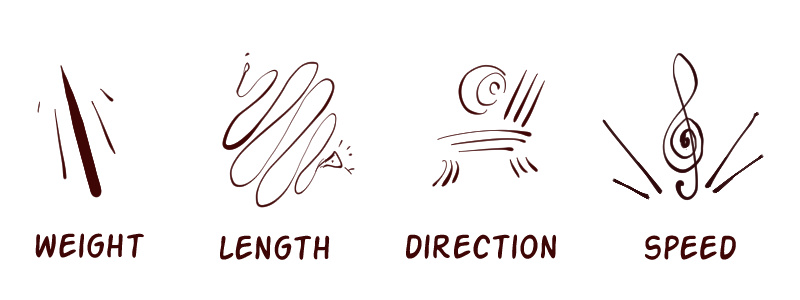

Lines and Edges
For anyone else out there struggling with anime-style art, this is what helped me.
Most anime "line drawings" are not actually line drawings. They are actually the boundaries of color shapes on the canvas.
The easiest way to explain this is by drawing a distinction between lines and edges.
Conceptually, a line is a standalone graphic element. It has properties such as weight, direction, rhythm, and energy. Careful arrangement of lines yields a finished illustration.
On the other hand, an edge represents the boundary between two different shapes. This leads to some interesting characteristics. For one, the only property edges have is hardness. When two shapes immediately transition, the edge is hard. When two gradients gradually mix together, the edge is soft.
Likewise, edges can only exist in the presence of shapes. That's because edges are a property of shapes. If you delete the shape, the edge disappears with it.
Where this distinction becomes muddled is once these two concepts hit the canvas. Usually, lines and edges are drawn using the same technique: a thin contrasting line. This unfortunate coincidence can make it difficult for an untrained eye to tell the difference.
One easy way to determine whether something is a line or an edge is to ask yourself the question: Could I
change the width of this line without losing any information?
Edges are the boundaries between shapes. No matter how wide the mark used to represent them is, we are still showing the same information. Lines are different. If we change the width of the line, we change its inherent properties.
Sketching with Edges
This brings us back to anime-style line art. Let us first break down how we can achieve a similar sketch style to Japanese anime artists.
The first consequence of our understanding is this:
An anime-style sketch uses no lines, only edges.
Here is an example of the difference between a drawing made with lines and a drawing made with edges.
There are a couple things to take notice of here.
The first observation is that many of the details inside the subject have been eliminated.
These quick repeating lines suggesting the curvature of the body have been omitted. These marks were not not necessary to illustrate the boundary between two shapes, so we left them out.
The second observation is the mark width.
Notice how the edge drawing uses marks that are an order of magnitude thinner than the line drawing.
This is where theory turns into practice.
It is nearly impossible to achieve this level of precision by approaching the subject with the intent to draw lines. Our sense of intuition crumbles once our mark width drops beneath a certain threshold. And without our intuition, it is impossible to draw convincingly at all.
The only way to surpass this limit is to tap into the brain's understanding of edges. Our intuition for the boundaries between shapes far exceeds our feel for form and rhythm.
Once we start thinking in terms of boundaries, we can crank the mark width down as small as we like.
Our lines might start to become become a little wobbly, but that's fine. The mark itself is no longer important, only the shape it encloses.
Painting with Edges
So far, we have only talked about black and white drawings. Now let's take a look at how our understanding of lines versus edges applies to painting.
The second consequence of our understanding is this:
A drawing that looks bad when colored is probably using a line where an edge was needed.
Here is an example of what usually happens when we try to color a line drawing instead of an edge drawing.

While the line drawing on the left looks fine, the colored version on the right doesn't quite match up. The patches of color seem to fight the dark marks strewn around the canvas.
This problem is symptomatic of most drawings that were originally conceived in terms of black and white lines.
The way we can overcome this problem is by leveraging our knowledge of shapes and edges.
If we want our drawing to look good when colored we need to starting thinking in terms of shapes from the start.
-- Can represent an edge any way we like.
-- Can use lines occasionally, but only if it is a standalone element.
Summary
- A line is a standalone element with properties like weight and direction.
- An edge is a boundary between two different shapes.
- Lines make sense on their own.
- Edges only make sense in relationship to shapes.
- Anime-style sketches uses only edges.
- Partner edges with colors instead of lines with colors.
In a pencil drawing, you only have lines. In an oil painting, you only have edges. In anime-style art, you juggle both lines and edges in the same composition.
To master the anime style, you must master the difference between lines and edges. Once you do, it is one of the most fun and efficient styles out there!
For those who like a visual summary, this diagram neatly sums up the main points.

Happy drawing!
🥕
∎